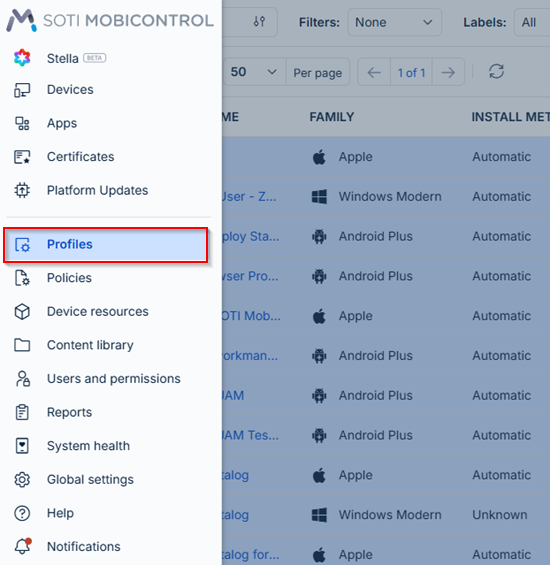
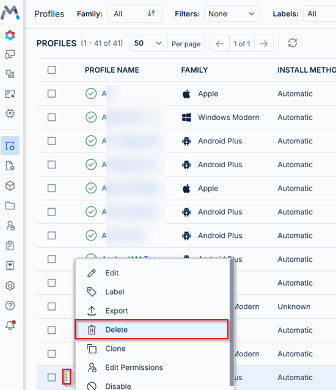
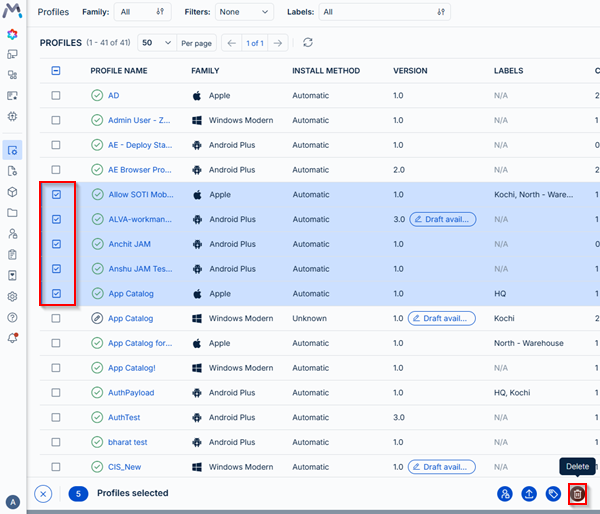
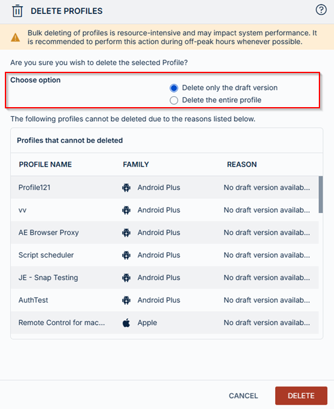
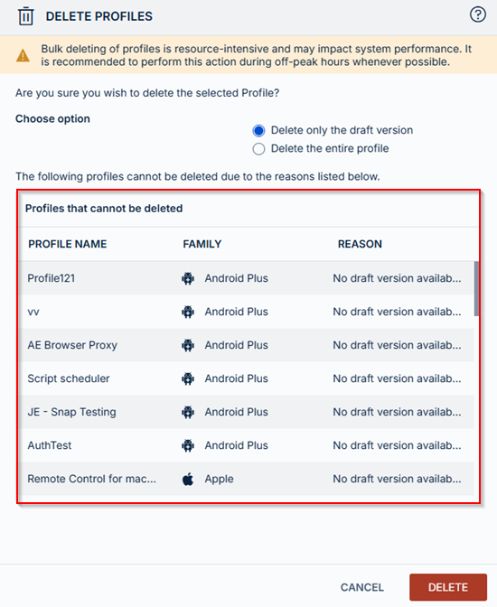

Scenario coverage · 2026-03-11 · trunk
A single-profile deletion procedure expands to single/bulk choices, draft-versus-entire-profile scope, permissions, exception reasons and stale-selection feedback.
Counts describe source structure, including commands in substeps. More elements do not by themselves prove better usability.
Before · parent revision
Deleting a Profile
About this task
Deleting a profile removes all configurations and packages from the targeted devices, unless you customized the profile assignment options to leave the package contents installed even after package deletion.
To delete a profile:
Procedure
- In the Profiles view, select a profile name to open its Profile Information panel, then select the Delete button from the Profile Actions list.You can also select > Delete beside the profile.
- The Delete Profile? dialog box displays. If you have a draft (saved but not yet assigned) version of the profile, you can choose to delete one of the following:
- Delete draft only
- Delete profile
- Select Delete.
Result
The profile is completely removed from your devices and SOTI MobiControl. SOTI MobiControl completely removes the profile from both your devices and the Profiles list. If you delete a draft profile, SOTI MobiControl reverts to the most recent published version.
After · committed revision
Delete Profiles
Delete one or multiple profiles from SOTI MobiControl to clean up unused configurations. Bulk delete enables administrators to remove several profiles at once while providing safeguards and clear feedback about items that cannot be deleted.
About this task
Deleting a profile removes its configurations and packages from targeted devices unless the profile assignment options were configured to leave package contents installed after deletion.In addition to deleting individual profiles, administrators can perform bulk deletion from the Profiles list. This capability helps reduce manual effort when cleaning up multiple profiles.
If you want to remove a profile from devices without deleting it entirely from SOTI MobiControl, consider revoking the profile.
Procedure
- From the main menu, navigate to .

Navigating to the Profiles menu. - Select one or more profiles from the list.
- To delete a single profile, select beside the profile and select Delete.

Deleting a single profile. - To delete multiple profiles, select the check-boxes beside the profile. The context action
bar appears with the Delete option. Select
Delete.

Deleting more than one profile.
- To delete a single profile, select beside the profile and select Delete.
- When deleting multiple profiles:
- Choose the deletion scope. Choose from:
- Delete only the draft version: Removes the draft configuration while keeping the currently published version.
- Delete the entire profile: Removes both the published profile and any drafts.

Choosing between deleting the draft version or the entire profile. - Review the Profiles that cannot be deleted section if displayed.
This list shows profiles that are excluded from the deletion request along with the reason they cannot be deleted. Common reasons include:
- No draft version available
- Missing setup permission
- Missing assignment permission
- Missing edit permission
This list helps administrators understand which items are skipped during large cleanup operations.

Reviewing the profile deletion exceptions list.
- Select Delete to confirm deletion.
Result
The system enters a processing state while the operation completes. Actions are temporarily disabled to prevent duplicate requests. When the operation completes, a toast notification indicates whether the deletion was successful or if any errors occurred.If profiles change while the deletion dialog is open, a real-time update banner appears and the Delete button is disabled. Refresh the selection to continue. This prevents deleting profiles based on outdated information.
If profiles are deleted from another instance while you are viewing the Profiles page, an update banner appears recommending that you refresh the page.
Highlighted changes
Green marks additions; red marks removals. Historical review comments are shown in amber. Colour is also supported by placement and strike-through.
Deleting a Profile
About this task
Deleting a profile removes all configurations and packages from the targeted devices, unless you customized the profile assignment options to leave the package contents installed even after package deletion.
To delete a profile:
Procedure
- In the Profiles view, select a profile name to open its Profile Information panel, then select the Delete button from the Profile Actions list.You can also select > Delete beside the profile.
- The Delete Profile? dialog box displays. If you have a draft (saved but not yet assigned) version of the profile, you can choose to delete one of the following:
- Delete draft only
- Delete profile
- Select Delete.
Result
The profile is completely removed from your devices and SOTI MobiControl. SOTI MobiControl completely removes the profile from both your devices and the Profiles list. If you delete a draft profile, SOTI MobiControl reverts to the most recent published version.
Delete Profiles
Delete one or multiple profiles from SOTI MobiControl to clean up unused configurations. Bulk delete enables administrators to remove several profiles at once while providing safeguards and clear feedback about items that cannot be deleted.
About this task
Deleting a profile removes its configurations and packages from targeted devices unless the profile assignment options were configured to leave package contents installed after deletion.In addition to deleting individual profiles, administrators can perform bulk deletion from the Profiles list. This capability helps reduce manual effort when cleaning up multiple profiles.
If you want to remove a profile from devices without deleting it entirely from SOTI MobiControl, consider revoking the profile.
Procedure
- Select one or more profiles from the list.
- When deleting multiple profiles:
- Review the Profiles that cannot be deleted section if displayed.
This list shows profiles that are excluded from the deletion request along with the reason they cannot be deleted. Common reasons include:
- No draft version available
- Missing setup permission
- Missing assignment permission
- Missing edit permission
This list helps administrators understand which items are skipped during large cleanup operations.
- Select Delete to confirm deletion.
Result
The system enters a processing state while the operation completes. Actions are temporarily disabled to prevent duplicate requests. When the operation completes, a toast notification indicates whether the deletion was successful or if any errors occurred.If profiles change while the deletion dialog is open, a real-time update banner appears and the Delete button is disabled. Refresh the selection to continue. This prevents deleting profiles based on outdated information.
If profiles are deleted from another instance while you are viewing the Profiles page, an update banner appears recommending that you refresh the page.
WYSIWYG-style approximation using the SOTI diff renderer. This is not an Oxygen/DITA-OT build or a live help page. Keyrefs, conrefs, conditional content and related-link navigation may require the original publishing environment. Screenshots are extracted from the matching revision.